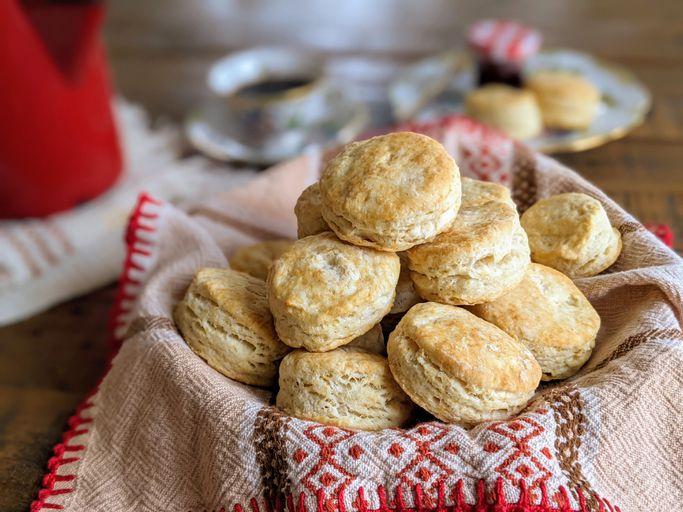

Description
Looking for a homemade biscuit recipe that's perfect for beginners and experienced cooks alike? Your search ends here. This tried-and-true recipe is beloved by the Allrecipes community because it's easy to make with just five ingredients, it calls for kitchen staples you probably already have on hand, and it's absolutely delicious.
Ingredients
- 2 cups all-purpose flour
- 1 tablespoon baking powder
- ½ teaspoon salt
- ½ cup shortening
- ¾ cup cold milk
Steps
- Step 1: Gather all ingredients and preheat oven to 450 degrees F (230 degrees C).
- Step 2: Sift flour, baking powder, and salt together in a large mixing bowl; cut in shortening with a fork or pastry blender until mixture resembles coarse crumbs.
- Step 3: Pour milk into flour mixture while stirring with a fork. Mix in milk until dough is soft, moist and pulls away from the side of the bowl.
- Step 4: Turn dough out onto a lightly floured surface and knead dough briefly, 5 to 7 times.
- Step 5: Roll dough out into a 1/2 inch thick sheet and cut out biscuits with a floured cookie cutter. Press together unused dough and repeat rolling and cutting procedure.
- Step 6: Place biscuits on ungreased baking sheets and bake in preheated oven until golden brown, about 10 minutes.
- Step 7: Enjoy!
Home